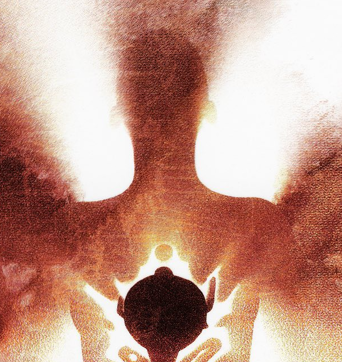
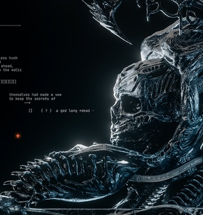
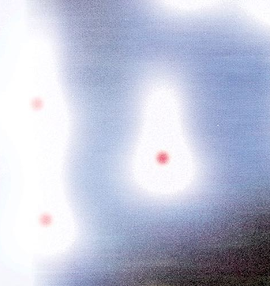
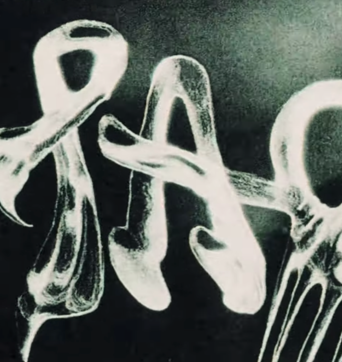
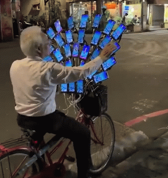
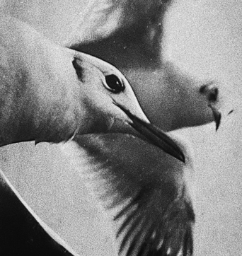

Ɵʅ͡͡͡͡͡͡͡͡͡͡͡(̸̢̛̼̞̭͋ͅ)̸͚̰͛̔̾̀̿͒͂v̴̢͚͚͎ȯ̶̞̮͖̑̈́)̸̳̥̰̜̥̺̐ͅ)̴͎̜͍̱̋̌͋̓̾̚⡇ꉺლ༽இ•̛)ྀ◞ ༎ຶ ༽ৣৢ؞ৢ؞ؖ ꉺლ҉⃝ ʅ͡͡͡͡͡͡͡͡͡͡͡ ̟̞̝̜̙̘̗̖҉̵̴̨̧̢̡̼̻̺̹̳̲̱̰̯̮̭̬̫̪̩̦̥̤̣̠҈͈͇͉͍͎͓͔͕͖͙͚͜͢͢͢͢͢͢͢͢͢͢͢͢͢͢ͅ l̡̡̡ ̡͌ ̵̨̛̱̥͕́̎́̐͝/̸̠̜̅̐͊̋̿̐̓\̸̧͔̰̳̦̣̪̈̏̓ ̴̡̛̅͐͛̀̽/̶̱̼̣̤̰̲̣̈́̋͌̿̄̍̊\̴̲̣̝̀͜ͅ⣎
⣎⡇ꉺლ༽இ•̛)ྀ◞ ༎ຶ ༽ৣৢ؞ৢ؞ؖ ꉺლ
Hello There is more to life than this life.
- ∷፨◉☼◞⊖◟☼
- ؞ৢ؞ؖ ꉺლ)△▃△▓
- ⣎⡇ꉺლ༽இ•̛)ྀ◞ ༎ຶ
Kieran Hebden, best known as Four Tet, has revived his symbol-driven ⣎⡇ꉺლ༽இ•̛)ྀ◞ ༎ຶ ༽ৣৢ؞ৢ؞ؖ ꉺლ alias for two new tracks.









What is all of this?
⣎⡇ꉺლ༽இ•̛)ྀ◞ ༎ຶ ༽ৣৢ؞ৢ؞ؖ ꉺლ.